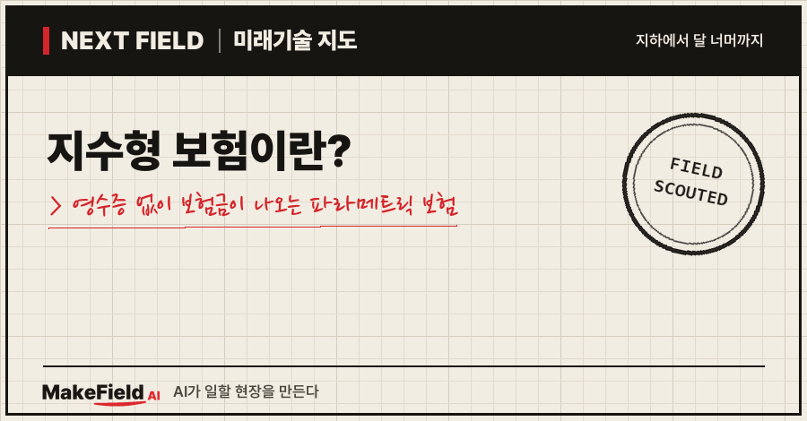
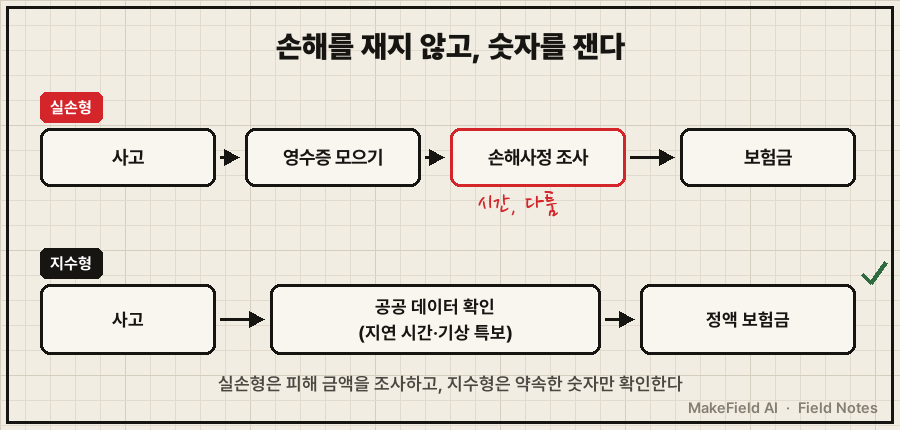
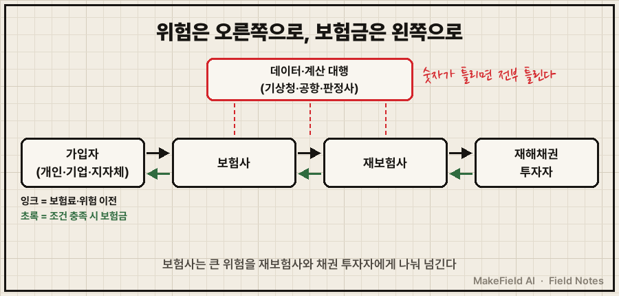
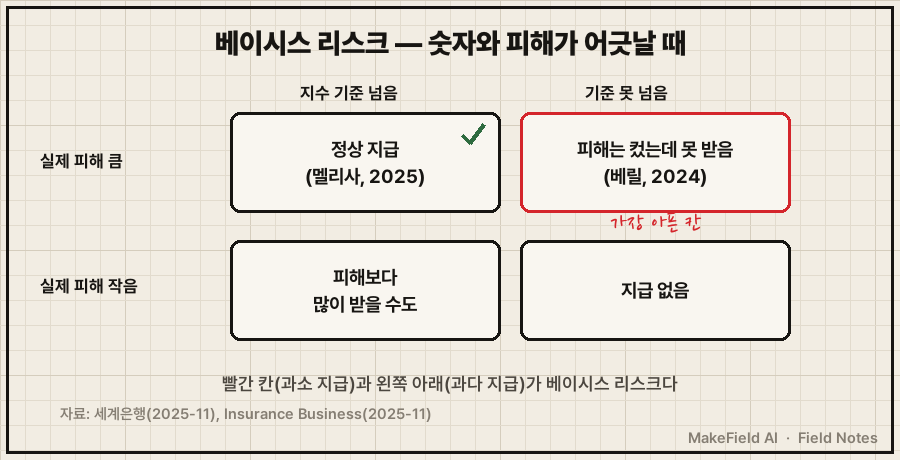

한 줄 요약: 지수형 보험이란 실제 손해를 조사하지 않고 '비가 몇 mm 왔나, 비행기가 몇 시간 늦었나' 같은 숫자(지수)가 기준을 넘으면 정해진 보험금을 바로 주는 보험이에요. 국내에서는 2025년 2월 삼성화재의 항공기 지연 특약이 업계 첫 상품으로 나왔고(헤럴드경제 2026-03), 2026년 여름에는 폭염으로 공사가 멈춘 건설 일용직에게 시간당 17,210원을 주는 제주 기후보험이 시작됐습니다(파이낸셜뉴스 2026-07).
보험금을 받으려고 영수증을 모으고, 손해사정사의 현장 조사를 기다려 본 사람이라면 "숫자만 보고 바로 준다"는 말이 낯설게 들릴 거예요. 이 글은 그 구조가 어떻게 돌아가는지, 누가 돈을 내고 누가 버는지, 그리고 어디서 틀어질 수 있는지를 2026년 10월 기준으로 풀어 봅니다.
1. 지수형 보험은 일반 보험과 무엇이 다른가요
일반 보험(실손형)은 '얼마나 잃었나'를 따지고, 지수형은 '약속한 숫자가 넘었나'만 따집니다. 영어로는 파라메트릭(parametric) 보험이라고 해요.
💡 파라메트릭 보험 — 손해 조사 없이 강수량·풍속·지연 시간 같은 숫자(지수)가 기준을 넘으면 미리 정한 금액을 자동으로 주는 보험. "비가 100mm 넘으면 10만 원" 같은 약속이다.
💡 손해사정 — 사고가 났을 때 실제 피해가 얼마인지 조사해 보험금을 정하는 절차. 시간이 걸리고 다툼이 생기기 쉽다.
항공기 지연 보험으로 비교하면 차이가 선명해요.
| 구분 | 실손형 | 지수형 |
|---|---|---|
| 지급 조건 | 지연 중 실제로 쓴 식비·숙박비 | 2시간 이상 지연 또는 결항이라는 사실 |
| 내야 할 서류 | 영수증 | 항공 지연 증명만(별도 비용 증빙 없음) |
| 보험금 | 쓴 만큼(한도 안에서) | 지연 시간별 정액 |
| 예시 금액 | 사람마다 다름 | 출국편 최대 10만 원, 귀국·경유편 최대 20만 원(6시간 이상 지연·결항) |
*(금액: 삼성화재 특약 기준 — 딜사이트 2025-07, 헤럴드경제 2026-03. 가입 전에는 해당 시점 약관을 확인해야 합니다.)*

위 그림처럼 지수형은 중간의 '손해를 재는 단계'를 통째로 건너뜁니다. 그래서 빠르지만, 대신 '숫자'가 믿을 만해야 해요.
2. 왜 지금 지수형이 뜨나요
이유는 두 가지예요. 날씨 피해가 잦아졌고, 그 피해를 숫자로 잴 공공 데이터가 쌓였기 때문입니다.
첫째, 폭염·폭우처럼 피해는 넓게 퍼지는데 한 건 한 건 금액은 작은 손해가 늘었어요. 이런 손해를 일일이 조사하면 조사비가 보험금보다 커집니다. 제주 기후보험이 대표 사례예요. 폭염 중대경보가 오후 1시 전에 내려지고 현장 작업이 전면 중단되면, 쉬게 된 시간만큼 최대 4시간까지 시간당 17,210원을 줍니다. 4시간을 다 채우면 하루 68,840원이에요(파이낸셜뉴스 2026-07). 이 금액은 보통인부 일당 172,068원을 시급으로 바꾼 뒤 80%를 적용해 정했어요.
둘째, 숫자를 확인할 데이터가 공개돼 있어요. 손해보험협회는 기상청·한국지질자원연구원과 데이터 표준화·API 연동을 논의했고, 보험개발원은 지수형 상품의 첫 참조순보험요율을 산출했습니다(딜사이트 2025-07).
💡 API — 프로그램끼리 데이터를 주고받는 통로. 보험사 시스템이 기상청 특보를 사람 손 없이 바로 받아 볼 수 있게 해 준다.
💡 참조순보험요율 — 보험개발원이 통계로 계산해 보험사들에 제공하는 '기준 보험료율'. 새 상품의 가격표 밑그림이 된다.
경향신문(2026-06)은 제주 건설현장 기후보험과 KB손해보험의 전통시장 날씨피해 보상보험(2025-10)을 공공·민간이 도입한 국내 첫 지수형 날씨보험으로 소개했어요.
3. 돈의 흐름 — 누가 내고, 누가 받고, 누가 버나요
이 보험의 돈은 '가입자 → 보험사 → 재보험사·채권 투자자'로 위험을 넘기며 흐르고, 그 사이에 데이터 제공자와 계산 대행사가 들어갑니다.
| 역할 | 하는 일 | 예시 |
|---|---|---|
| 보험료를 내는 쪽 | 개인, 기업, 지자체·정부 | 여행객, 제주도(상생기금 9억 원+도비 1억 원, 3년 10억 원 — 파이낸셜뉴스 2026-07) |
| 위험을 받는 쪽 | 보험사가 상품을 팔고 큰 위험은 재보험사에 넘김 | 국내 손해보험사, 해외 대형 재보험사 |
| 더 큰 재난 위험 | 재해채권으로 투자자에게 넘김 | 세계은행이 발행한 자메이카 재해채권 |
| 숫자를 대는 쪽 | 지수 데이터 제공·지급 여부 계산 | 공항공사·기상청 데이터, 허리케인 판정 대행사 |
💡 재보험 — 보험사가 드는 보험. 큰 사고가 나면 보험사 혼자 감당하지 않도록 위험을 나눈다.
💡 재해채권(캣본드) — 정해진 재난이 일어나면 투자자가 원금을 잃고 그 돈이 피해국·보험사에 가는 채권. 재난이 없으면 투자자는 높은 이자를 받는다.
시장 규모는 조사기관마다 크게 달라요. 글로벌마켓인사이츠는 2025년 세계 지수형 보험 시장을 194억 달러로 추정하고 2035년 638억 달러를 전망했습니다(Global Market Insights 2026-08). 반면 모르도르 인텔리전스는 2025년을 34억 8,000만 달러로 잡았어요(Mordor Intelligence 2026-08). 두 추정이 5배 이상 차이 나는 것은 '어디까지를 지수형으로 셀지' 정의가 아직 굳지 않았다는 신호로 읽는 게 안전합니다. 둘 다 추정치예요.

4. 누가 하고 있나요 — 국가·기업 사례
가장 큰 판은 '나라가 드는 재난 보험'이고, 기업 쪽에서는 데이터로 상품을 설계하는 보험 스타트업이 커지고 있어요.
- 자메이카(세계은행 재해채권): 2025년 11월 허리케인 멜리사가 미리 정한 조건(중심기압·경로)을 충족해 1억 5,000만 달러 전액이 지급됐어요. 판정은 미국 국립허리케인센터 자료를 바탕으로 제3자 계산 대행사가 했습니다(세계은행 2025-11).
- 데카르트 언더라이팅(프랑스, 예시): 기후 위험을 지수로 보장하는 파리의 보험 스타트업으로, 2022년 1억 2,000만 달러를 투자받았고 기업 고객이 200곳을 넘는다고 밝혔어요(tech.eu 2022-01).
- 대형 보험·재보험사: 글로벌마켓인사이츠는 AXA·알리안츠·뮌헨리 등을 시장 상위로, 국내 KB손해보험·삼성화재를 신흥 참여자로 분류했습니다(Global Market Insights 2026-08).
기업 이름은 구조를 보여 주는 예시일 뿐, 투자 판단의 근거가 아니에요.
5. 언제 오나요, 그리고 한계 — 베이시스 리스크
가장 큰 약점은 '숫자와 실제 피해가 어긋나는 것'이고, 이를 베이시스 리스크라고 부릅니다.
💡 베이시스 리스크 — 지수가 가리키는 결과와 가입자가 실제로 입은 피해가 어긋날 위험. 피해는 컸는데 숫자가 기준에 못 미쳐 한 푼도 못 받는 경우가 대표적이다.
자메이카가 그 예예요. 멜리사보다 앞서 4등급 허리케인 베릴이 자메이카에 큰 피해를 냈지만, 재해채권의 기준선을 간발의 차로 넘지 못해 지급되지 않았습니다(Insurance Business 2025-11). 그래서 업계에서도 "가능하면 실손형이 낫고, 지수형은 빠른 구호용 보완재"라는 의견이 함께 나와요.

국내에서는 과제가 더 있어요. 딜사이트(2025-07)는 지표의 정확성·데이터 신뢰성 확보, 데이터 설비 투자, 그리고 소비자가 지급 조건을 오해하는 불완전판매 우려를 꼽았습니다. 정리하면 이렇습니다.
- 이미 온 것: 항공기 지연(2025~), 전통시장 날씨피해(2025-10), 건설 일용직 폭염(2026 여름)
- 아직 남은 것: 농작물·중소기업 휴업처럼 피해와 숫자를 잇기 어려운 분야, 소비자 설명 기준과 감독 지침
자주 묻는 질문
Q. 지수형 보험은 피해가 없어도 보험금을 주나요?
네, 원칙적으로 지수가 기준을 넘으면 실제 손해와 상관없이 정해진 금액을 줍니다. 다만 제주 기후보험처럼 '실제 작업 중단'을 함께 요구하는 상품도 있어요.
Q. 실손형보다 항상 유리한가요?
아니에요. 빠르고 서류가 적은 대신, 피해가 커도 숫자가 기준에 못 미치면 못 받습니다(베이시스 리스크). 실손형과 함께 드는 보완재로 보는 게 맞아요.
Q. 파라메트릭 보험과 지수형 보험은 다른 건가요?
같은 말이에요. 파라메트릭(parametric)을 우리말로 옮긴 것이 지수형입니다.
오늘의 용어 정리
- 지수형(파라메트릭) 보험 — 숫자가 기준을 넘으면 정액을 자동 지급하는 보험
- 실손형 보험 — 실제로 잃은 만큼 따져서 주는 보험
- 손해사정 — 피해 금액을 조사해 보험금을 정하는 절차
- API — 프로그램끼리 데이터를 주고받는 통로
- 참조순보험요율 — 보험개발원이 계산해 주는 기준 보험료율
- 재보험 — 보험사가 드는 보험
- 재해채권(캣본드) — 재난이 나면 투자자 원금이 피해 보상으로 가는 채권
- 베이시스 리스크 — 지수와 실제 피해가 어긋날 위험
지난 Next Field에서는 정수장 해킹과 갈륨 공급망처럼 '물건과 설비의 병목'을 봤어요. 이번엔 위험을 숫자로 바꿔 사고파는 금융 쪽 병목을 봤습니다. 여러분이라면 폭우·폭염 같은 날씨 위험 중 어떤 것을 지수형으로 보장받고 싶으신가요?
출처
[1] 딜사이트(2025-07) — 삼성화재·KB손보 지수형 특약 출시, 손해보험협회의 기상청·지질자원연구원 데이터 연동 논의, 보험개발원 첫 참조순보험요율, 데이터 신뢰성·불완전판매 과제
→ https://dealsite.co.kr/articles/145236
[2] 헤럴드경제(2026-03) — 삼성화재 2025년 2월 업계 첫 출국 항공기 지연 지수형 특약, 귀국·경유편 특약 추가(6시간 이상 지연·결항 시 최대 20만 원), 영수증 없이 지연 증명만으로 지급
→ https://www.heraldk.com/article/2026031514351433221
[3] 파이낸셜뉴스(2026-07) — 제주 건설노동자 기후보험 지급 조건(오후 1시 전 폭염 중대경보·작업 전면 중단, 최대 4시간), 시간당 17,210원·하루 68,840원, 산정 기준, 3년 10억 원 재원
→ https://www.fnnews.com/news/202607091402472990
[4] 경향신문(2026-06) — 제주 건설현장 기후보험·KB손보 전통시장 날씨피해 보상보험(2025-10)을 국내 첫 공공·민간 지수형 날씨보험으로 소개
→ https://www.khan.co.kr/article/202606021604001
[5] 세계은행(2025-11) — 허리케인 멜리사가 중심기압·경로 조건을 충족해 자메이카 재해채권 1억 5,000만 달러 전액 지급, 제3자 계산 대행사 판정
→ https://www.worldbank.org/en/news/press-release/2025/11/07/hurricane-melissa-triggers-100-payout-of-150-million-world-bank-catastrophe-bond-for-jamaica
[6] Insurance Business(2025-11) — 허리케인 베릴이 기준선을 간발의 차로 넘지 못해 미지급, 베이시스 리스크 논쟁, 실손형 선호·지수형 보완재 의견
→ https://www.insurancebusinessmag.com/us/news/breaking-news/jamaicas-150-million-payout-rekindles-parametric-concerns-but-ils-market-holds-firm-556986.aspx
[7] Global Market Insights(2026-08) — 세계 지수형 보험 시장 2025년 194억 달러 추정, 2035년 638억 달러 전망, 상위 보험·재보험사와 국내 신흥 참여자
→ https://www.gminsights.com/industry-analysis/parametric-insurance-market
[8] Mordor Intelligence(2026-08) — 세계 지수형 보험 시장 2025년 34억 8,000만 달러 추정(다른 조사와의 편차 근거)
→ https://www.mordorintelligence.com/industry-reports/parametric-insurance-market
[9] tech.eu(2022-01) — 데카르트 언더라이팅 1억 2,000만 달러 시리즈 B, 기후 위험 지수형 보험, 기업 고객 200곳 이상
→ https://tech.eu/2022/01/31/index-based-insurance-provider-descartes-underwriting-triggers-120-million-in-new-funding/